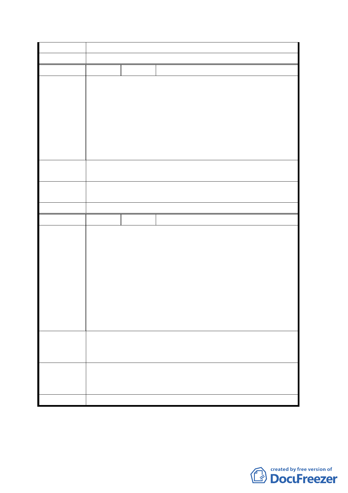

結論
委員會決議 同意依專案小組審查結論辦理。
編 號 ３ 陳情人 高悅為
建議位置：文山區富德段三小段 300 地號
建議理由：
這次有納入區段徵收之土地，其公告現值幾乎大致相同，
陳情理由
但政府所定之公告地價完全不合情理，市價完全不同之土
地卻有同樣的公告地價，同樣的徵收標準，雖同為保護區
之土地，但有建物之平坦建地、平坦的農地、山坡地；在
區段徵收前其市價是天壤之別，但區段徵收後卻分到相同
的土地，非常不合理。
建議辦法
建議應在區段徵收前，重新調整公告地價，若無則是否給
300 地號原地翻建，不納入此次區段徵收範圍。
專 案 小 組 同意發展局所提方案及修正範圍；有關區段徵收、公告地
結 論 價事宜建請逕洽地政處了解。
委員會決議 同意依專案小組審查結論辦理。
編 號 ４ 陳情人 謝申愛蓮
建議位置：文山區富德段三小段 0219-0000 地號
建議理由：
1.本計劃範圍北臨北二高邊坡用地，南隔景美溪與市立動
物園，確在本土地標示範圍內。
陳情理由
2.北二高為交通要道，市立動物園亦為觀光勝地，為解決
交通擁塞及支援旅客停車、餐飲及住宿等服務需求，均
需建立大型停車場以紓緩交通，與建造國際觀光旅館以
吸引國內外觀光客。
3.本土地標示正面對動物園，景觀奇佳且土質鬆軟肥沃，
適合美化環境，改造為清新之社區。
請將文山區富德段三小段 0219-0000 地號之土地納入計畫
建 議 辦 法 範圍內；如有困難，請設法解決本土地進出通路問題以免
無法使用，浪費土地資源。
專案小組
結論
同意發展局所提方案及修正範圍，坡度 30%以下範圍重新
檢視納入計畫範圍，另計畫範圍邊界皆留有 5 公尺緩衝空
間。
委員會決議 同意依專案小組審查結論辦理。
討論事項四
一五